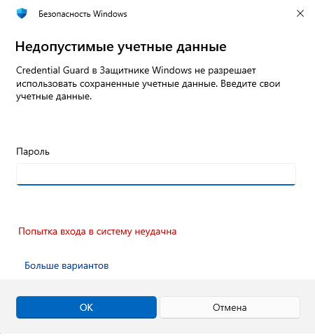
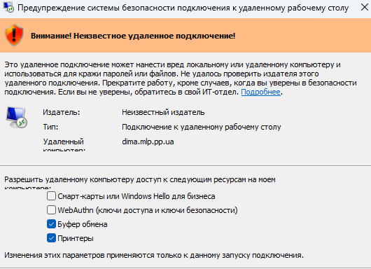

reg add "HKLM\SYSTEM\CurrentControlSet\Control\Lsa" /v LsaCfgFlags /t REG_DWORD /d 0 /f

Конфигурация компьютера -> Административные шаблоны -> Компоненты Windows -> Службы удаленных рабочих столов -> Клиент подключения к удаленному рабочему столу.
Найдите политику Разрешить .rdp-файлы от неизвестных издателей (Allow .rdp files from unknown publishers).
выберите Включено (Enabled) и нажмите ОК.
@echo off start "" mstsc /v:dima.mlp.pp.ua /f
reg add "HKLM\SYSTEM\CurrentControlSet\Services\LanmanWorkstation\Parameters" /v AllowInsecureGuestAuth /t REG_DWORD /d 1
net stop LanmanWorkstation && net start LanmanWorkstation
REG ADD HKLM\SOFTWARE\Microsoft\Windows\CurrentVersion\Policies\System\CredSSP\Parameters /v AllowEncryptionOracle /t REG_DWORD /d 2
Ошибка при подключении по RDP
Это сообщение указывает на ошибку шифрования, часто связанную с проблемами TLS/SSL, настройками политики безопасности, различиями в протоколах RDP, или обновлениями безопасности.
Службы удаленных рабочих столов→
Узел Сеаансов удаленных рабочих столов→
Безопасность→
Устанвоить уровень шифрования для клинских подключнеий→
Совместимый с клиентомgpedit.msc→
Конфигурация компьютера →
Административные шаблоны →
Компоненты Windows →